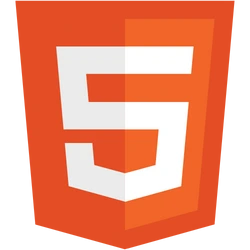
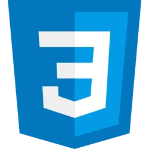
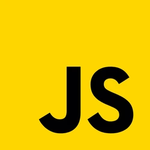
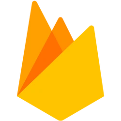
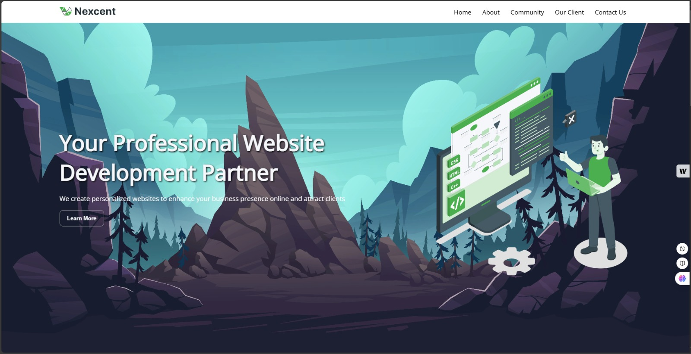

Hi, my name is
Muhammad Syifa Surya Saputra.
Front End Developer
I am a Frontend Web Developer who focuses on user-centered design and building accessible web experiences. I turn ideas into responsive and performant applications using HTML, CSS, and JavaScript.
Currently, I’m deepening my skills in React, Next.js, and TypeScript to craft business-driven, user-focused solutions.
About Me
Hello! I’m Muhammad Syifa Surya Saputra, a passionate Frontend Developer with a strong foundation in building responsive and scalable web applications using Next.js, TypeScript, and React.js.
I gained hands-on experience through the Full-Stack Software Engineering program at RevoU and my real-world contributions at PT LPP Agro Nusantara, where I built internal dashboards, integrated RESTful APIs, and optimized inventory workflows using TailwindCSS.
My technical stack includes JavaScript, TypeScript, Flask, Laravel, MySQL, and Firebase. I follow best practices in clean code, component-based architecture, and global state management with React Context.
I’ve worked with Agile teams, applied unit testing with Jest, and managed code with Git and GitHub. Beyond frontend, I also bring experience in IT governance, COBIT 2019 process evaluation, and SOP documentation.
I'm passionate about crafting impactful digital solutions and committed to continuous learning to build high-quality, user-centered products.
What Can I Do ?

HTML


REACT

TAILWIND
What I've Experience
Software Engineer Bootcamp
October 2024 - May 2025
- Built full-stack web apps using HTML, CSS, JavaScript, TypeScript, React.js, Next.js, TailwindCSS, and Flask.
- Developed an e-commerce platform with features like product filtering, shopping cart, user authentication, and checkout flow.
- Applied global state management using React Context and wrote unit tests with Jest.
- Practiced Agile development, Git collaboration, clean code principles, and integrated RESTful APIs in team projects.
Some Things I've Built

Featured Project
Nexcent
I developed a responsive and accessible website using semantic HTML and Tailwind CSS with a mobile-first approach. I implemented flexible layouts with Flexbox and Grid, ensuring smooth navigation across devices. I was responsible for the entire frontend and deployed the project via GitHub Pages.
- VS Code
- HTML
- CSS
- JavaScript
- Tailwind
What's Next ?
Get In Touch
Although I’m not currently looking for any new opportunities, my inbox is always open. Whether you have a question or just want to say hi, I’ll try my best to get back to you!